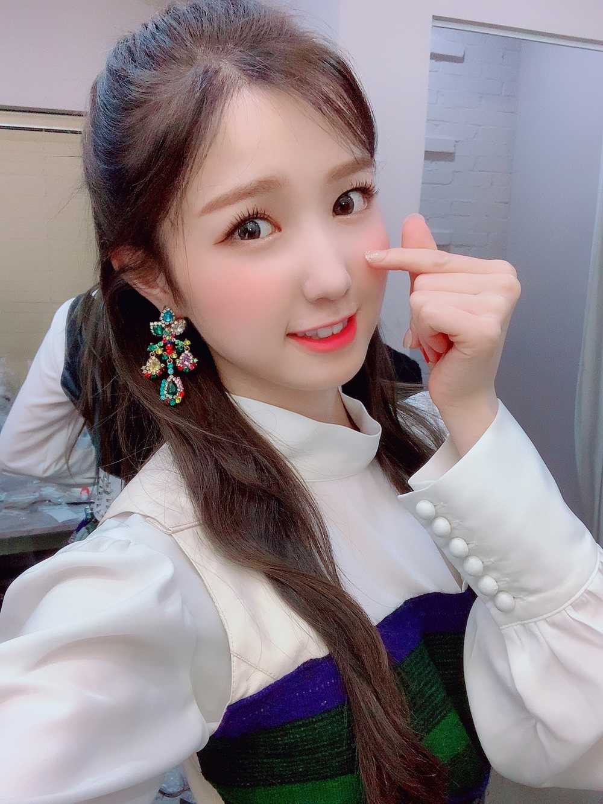
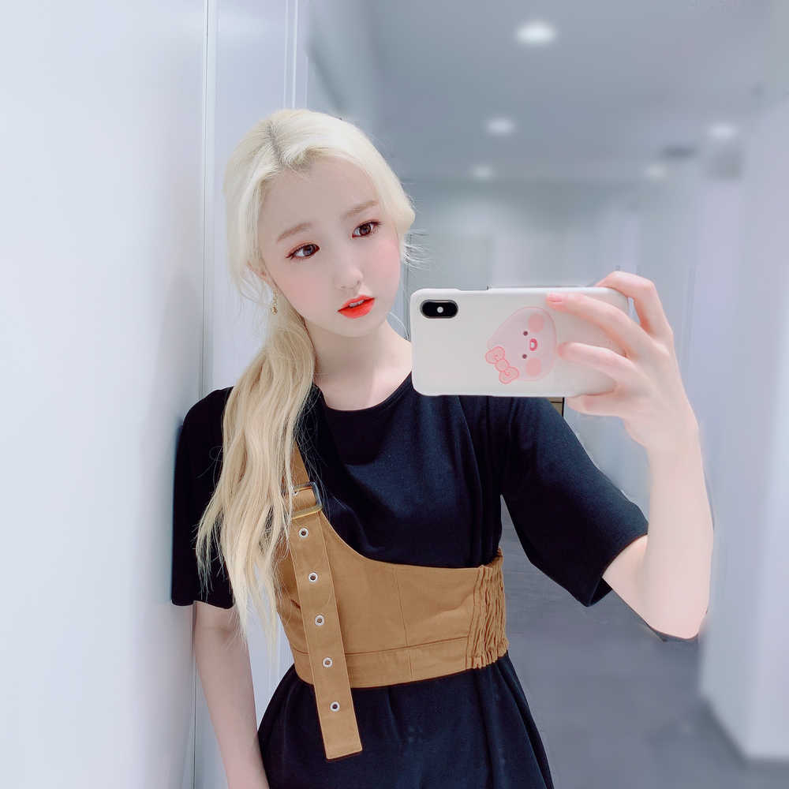

こんにちは😃
ひいだよ🍓

昨日のラジオ聴いてくれたかな〜📻？
また来週も聴いてね😄
今日はたくさん寝てしまいました…
さっき朝ご飯食べたけど
もうおやつの時間だね😂😂
最近昼と夜が逆転しちゃってるメンバーも
いるみたいだから😱
そうなると元の生活に戻すの大変だから
気をつけなきゃ！！
じゃあ質問タイム〜⏰
Q. お風呂先派🛁ですか？
それともご飯🍚が先派ですか？
A. 最近はご飯が先です🍚
うちの家族は大晦日の日だけお風呂が先🛁
なんでかっていうと
ご飯食べた後にゆっくりできるから！！
あとお風呂先に入った後に
料理とかすると匂いがついちゃうからね😢
Q.シチューにライスはあり？なし？？
A. めちゃめちゃあり🙋🏻♀️🙋🏻♀️🙋🏻♀️
だってドリアも実際シチューの上に
ごはんみたいなもんじゃないか😳
というわけで全然アリです〜✌🏻
ちなみに이호は
ドリア派ですか？グラタン派ですか？？😊
Q. ひぃちゃんは水性と油性のボールペン
どっち派？
A. 油性かな〜！！
私はお気に入りのボールペンが
あります！
とっても書きやすい〜😇
太さはちなみに0.4！！
シャーペンだったら
HBの0.3が好きです🙋🏻♀️
ではまたっ
많이 자버렸네... ㅎㅎㅎ
어제 라디오 재밌게 들어주셨어요??
다음주도 맛있는 거 먹으면서 들어줘용🥰
아!!
그리고!!!
히 어제도 틀렸네요ㅎㅎㅎ
맞춰봐 가 아니라
맞혀봐 가 맞네!!!!
이거 몰랐어요!!!ㅎㅎㅎ
알려주신분 감사해요ㅠ
이렇게 아려주신 덕분에 공부가 되네요!!!
앞으로도 알려주세요😊
그리고 히가 보고있는 드라마!!!
일단 슬기로운 감빵생활은 아닙니다ㅎㅎㅎ
그건 좀 이따가 볼려고😉
아직 뭐 보고있는지 비밀~🙂ㅋㅋㅋㅋ
자!!! 오늘의 저녁메뉴는....
초밥🍣 어때요???
이호 는 초밥중에서 뭐가 제일 좋아??
히는... 계란말이튀김ㅋㅋㅋ
한국에서 처음으로 먹었는데 진짜....
짱 맛있었어요😭
저는 사실은 회도 한국에 와서 좋아졌어요!!!
초고추장이랑 만나서부터 세상이 달라졌어요ㅋㅋㅋ
초고추장 사랑해😘
난 간장보다 초고추장파!!!!

いま金髪にしたい欲がすごい。。
傷んでるからできないけど😖
早くまた明るくできるように
ヘアケアがんばる😭
ばいばーい👋🏻
ひいまる🥟